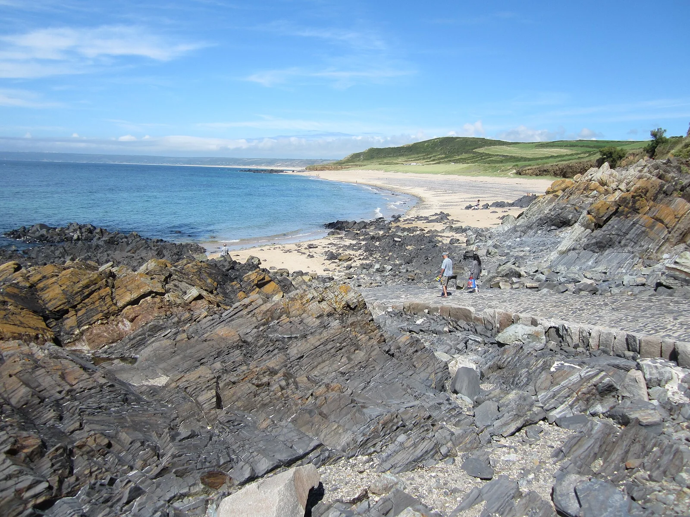

Siouville-Hague
Manche, France · surf, bodyboard, kitesurf

LE spot de surf de Normandie, sur la côte ouest du Cotentin : beach break exposé qui capte bien la houle atlantique.
- Lieu
- Manche, France
- Niveau
- Intermédiaire
- Activités
- surf, bodyboard, kitesurf
- Type d'eau
- Mer / océan
- Coordonnées
- 49.56, -1.84 (position approximative du secteur)
Dangers à connaître
- Courants forts par gros coefficient.
- Houle qui grossit vite.
Le conseil d'Ocean Buddy
Surf plus consistant à mi-marée ; gare aux courants de bord.
Ouvrir dans Ocean Buddy Télécharger sur l'App Store
Source : Description historique Ocean Buddy · vérification externe en attente.